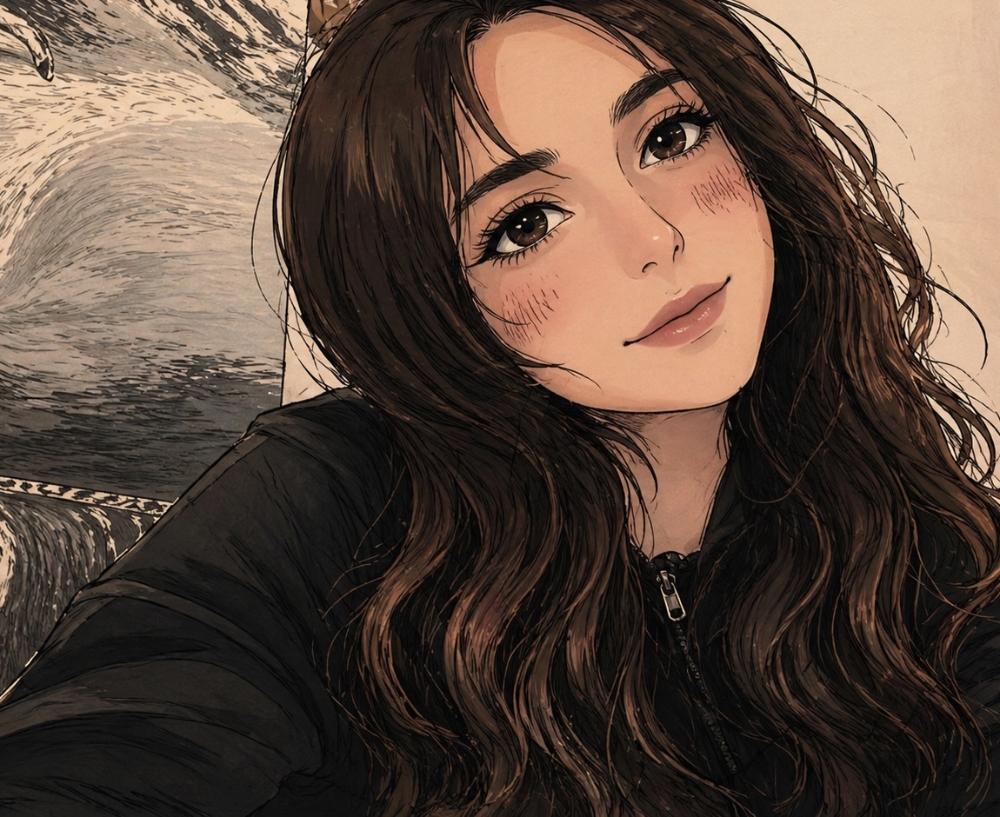

човекът зад картините

Здравейте! Аз съм SH – самоука художничка с голяма любов към изкуството. Още от малка рисуването е моят начин да изразявам емоции, мечти и малките истории от въображението ми.
Моят стил е предимно mixed media и pop art – обичам да експериментирам с различни материали, текстури и ярки цветове. Всяка картина носи собствено настроение и частица от моя свят.